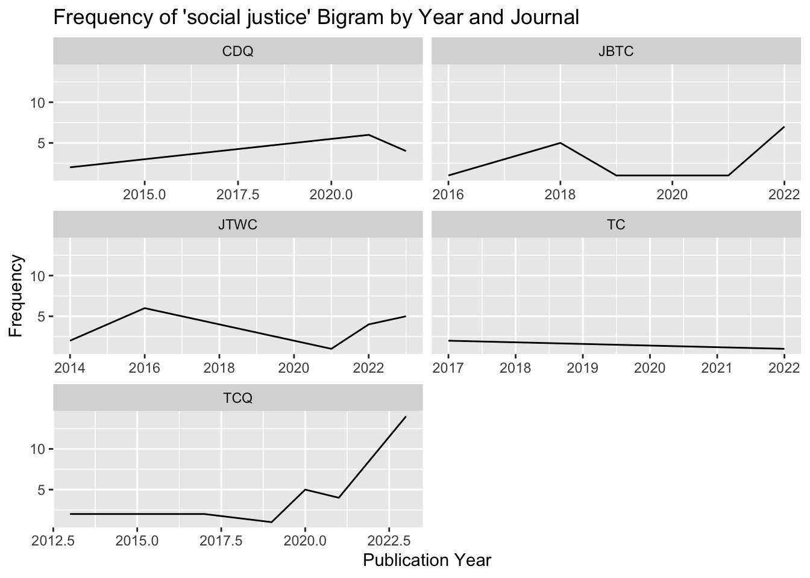
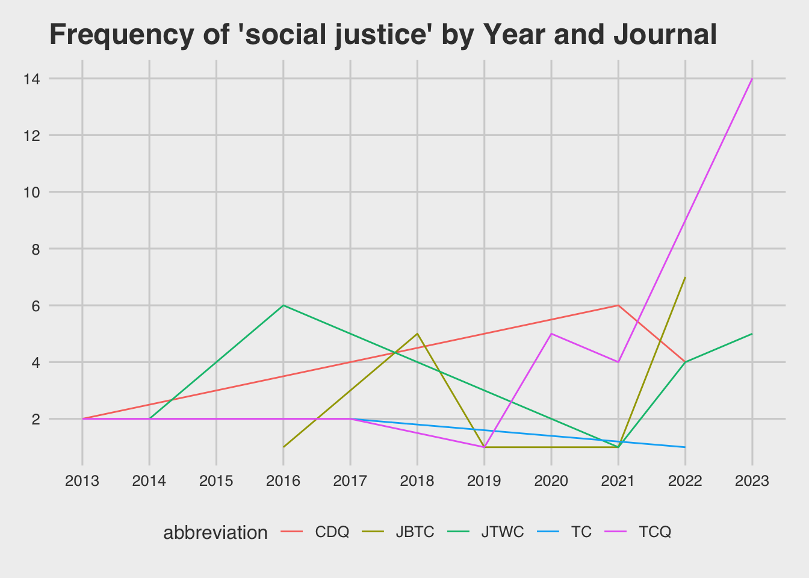
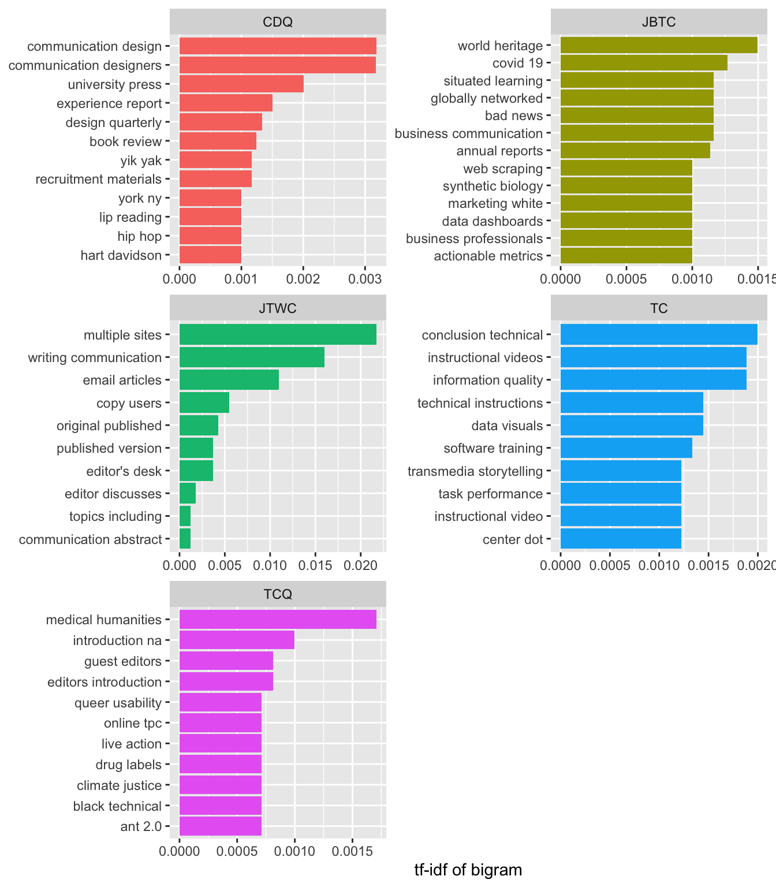
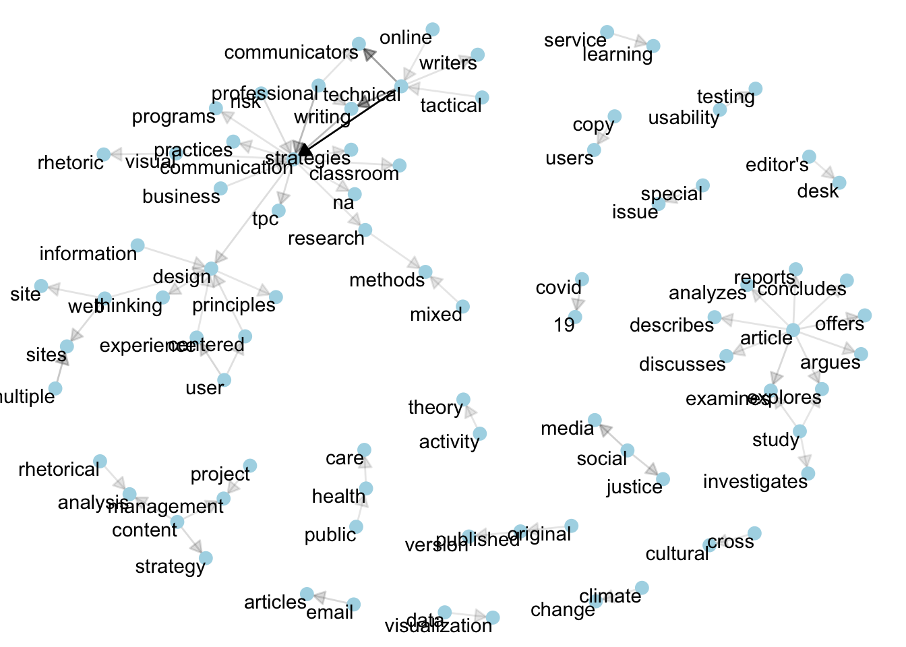

Wk 06: Tracking ngrams in TC Research
Overview
This week we explore the techniques used in Majdik (2019) and Graham (2021) to track ngrams in our dataset of TC articles. The techniques that follow are similar to the exploratory work that both authors advocate. That is, you might build on this work as you develop a more nuanced approach to your data.
While we could use Quanteda or a number of other approaches, we’ll draw on Chapter 4 of Text Mining with R: A Tidy Approach.
Preparation
Load libraries
Load data
Rows: 2,002
Columns: 6
$ source_title <chr> "JOURNAL OF BUSINESS AND TECHNICAL COMMUNICATION", "…
$ author_full_names <chr> "Wickman, Chad", "DeJeu, Emily Barrow", "DeVasto, Da…
$ article_title <chr> "Genre and Metagenre in Biomedical Research Writing"…
$ abstract <chr> "The use of reporting guidelines is an established y…
$ publication_year <dbl> 2023, 2022, 2016, 2009, 2009, 2020, 2016, 2012, 2011…
$ abbreviation <chr> "JBTC", "JBTC", "JBTC", "JBTC", "JBTC", "JBTC", "JBT…Exploring ngrams in title+abstracts
Create a “text” column that is title and abstract combined
Code
[1] "Genre and Metagenre in Biomedical Research Writing . The use of reporting guidelines is an established yet still-evolving practice in the field of biomedicine. These documents are often linked to common methodologies (e.g., randomized clinical trials); they include multiple textual artifacts (e.g., checklists, flow diagrams) and have a history that is coextensive with the emergence and ongoing development of evidence-based medicine (e.g., as an epistemological orientation to research and decision making). Drawing on the concept of metagenre, this article examines how practitioners use reporting guidelines to define and regulate the boundaries of biomedical research and writing activity. The analysis, focusing on one prominent set of guidelines, shows how practitioners use the genre-metagenre dynamic to promote strategic intervention while upholding traditional principles and standards for evidence-based research and communication."
[2] "The Ethics of Delivering Bad News: Evaluating Impression Management Strategies in Corporate Financial Reporting . Business communication textbooks offer impression management (IM) strategies to help students learn how to soften bad news. But corporations sometimes use these strategies in ethically questionable ways. This article analyzes IM strategies in a landmark case of ethically dubious corporate financial reporting. Findings suggest that the company, Ivax, manipulated three standard IM strategies by overamplifying its power to fix a financial crisis, substantially downplaying bad news, and concealing damaging information. Ivax also used a fourth, less familiar strategy: It buried contradictory information in legal disclaimers. Instructors need to help students become ethical writers who avoid questionable IM strategies like these." Break “text” into a list of bigrams
We use unnest_tokens from tidytext to break our “text” column into individual observations of bigrams.
Note that the “text” column will be replaced by a “bigram” column.
Code
tc_bigrams <- raw_data %>%
unnest_tokens(bigram, text, token = "ngrams", n = 2) %>%
filter(!is.na(bigram))Notice that we’ve transformed our 2002 articles into 227,304 bigrams.
We can then count the most common bigrams in the dataset
filter stopwords
Code
library(tidyr)
# transform "bigram" column into two columns: "word1" and "word2"
bigrams_separated <- tc_bigrams %>%
separate(bigram, c("word1", "word2"), sep = " ")
# filter to keep only rows where both word1 and word2 are not stopwords
bigrams_filtered <- bigrams_separated %>%
filter(!word1 %in% stop_words$word) %>%
filter(!word2 %in% stop_words$word)
# new bigram counts
bigram_counts <- bigrams_filtered %>%
count(word1, word2, sort = TRUE)
bigram_counts# A tibble: 39,418 × 3
word1 word2 n
<chr> <chr> <int>
1 technical communication 1197
2 technical writing 427
3 technical communicators 380
4 author copyright 248
5 professional communication 241
6 writing communication 237
7 sage publications 212
8 multiple sites 182
9 copyright holder's 155
10 holder's express 146
# ℹ 39,408 more rowsCustom stopwords
Code
custom_stopwords <- c("copyright",
"sage",
"holder's",
"express",
"permission",
"download")
# add custom stopwords to filter process
bigrams_filtered <- bigrams_separated %>%
filter(!word1 %in% stop_words$word) %>%
filter(!word2 %in% stop_words$word)%>%
filter(!word1 %in% custom_stopwords) %>%
filter(!word2 %in% custom_stopwords)
# new bigram counts
bigram_counts <- bigrams_filtered %>%
count(word1, word2, sort = TRUE)
bigram_counts# A tibble: 39,374 × 3
word1 word2 n
<chr> <chr> <int>
1 technical communication 1197
2 technical writing 427
3 technical communicators 380
4 professional communication 241
5 writing communication 237
6 multiple sites 182
7 social media 135
8 user experience 102
9 social justice 94
10 email articles 92
# ℹ 39,364 more rowsNow we can reunite our two columns into a single bigram column
# A tibble: 58,563 × 7
source_title author_full_names article_title abstract publication_year
<chr> <chr> <chr> <chr> <dbl>
1 JOURNAL OF BUSINES… Wickman, Chad Genre and Me… The use… 2023
2 JOURNAL OF BUSINES… Wickman, Chad Genre and Me… The use… 2023
3 JOURNAL OF BUSINES… Wickman, Chad Genre and Me… The use… 2023
4 JOURNAL OF BUSINES… Wickman, Chad Genre and Me… The use… 2023
5 JOURNAL OF BUSINES… Wickman, Chad Genre and Me… The use… 2023
6 JOURNAL OF BUSINES… Wickman, Chad Genre and Me… The use… 2023
7 JOURNAL OF BUSINES… Wickman, Chad Genre and Me… The use… 2023
8 JOURNAL OF BUSINES… Wickman, Chad Genre and Me… The use… 2023
9 JOURNAL OF BUSINES… Wickman, Chad Genre and Me… The use… 2023
10 JOURNAL OF BUSINES… Wickman, Chad Genre and Me… The use… 2023
# ℹ 58,553 more rows
# ℹ 2 more variables: abbreviation <chr>, bigram <chr>Trigrams (all at once)
Code
tc_trigrams <- raw_data %>%
unnest_tokens(trigram, text, token = "ngrams", n = 3) %>%
filter(!is.na(trigram)) %>%
separate(trigram, c("word1", "word2", "word3"), sep = " ") %>%
filter(!word1 %in% stop_words$word,
!word2 %in% stop_words$word,
!word3 %in% stop_words$word,
!word1 %in% custom_stopwords,
!word2 %in% custom_stopwords,
!word3 %in% custom_stopwords) %>%
unite(trigram, word1, word2, word3, sep = " ")
tc_trigrams %>%
count(trigram, sort = TRUE)# A tibble: 22,185 × 2
trigram n
<chr> <int>
1 technical writing communication 235
2 professional communication tpc 72
3 user centered design 37
4 original published version 31
5 tactical technical communication 31
6 technical communication classroom 30
7 technical communication research 29
8 technical communication programs 24
9 covid 19 pandemic 22
10 user experience design 20
# ℹ 22,175 more rowsTracking Counts over time
Filtering bigrams of interest
We can use filter() to retain ngrams of interest, which we can then visualize…
Code
Rows: 94
Columns: 7
$ source_title <chr> "JOURNAL OF BUSINESS AND TECHNICAL COMMUNICATION", "…
$ author_full_names <chr> "Frost, Erin A.", "Petersen, Emily January; Walton, …
$ article_title <chr> "Apparent Feminism as a Methodology for Technical Co…
$ abstract <chr> "This article introduces apparent feminism, which is…
$ publication_year <dbl> 2016, 2018, 2018, 2018, 2018, 2018, 2022, 2022, 2022…
$ abbreviation <chr> "JBTC", "JBTC", "JBTC", "JBTC", "JBTC", "JBTC", "JBT…
$ bigram <chr> "social justice", "social justice", "social justice"…Code
# Calculate the frequency of the bigram by year
sj_bigram_freq <- sj_bigrams %>%
group_by(publication_year) %>%
summarize(frequency = n()) %>%
ungroup()
# Plot the frequency of the bigram by year
ggplot(sj_bigram_freq, aes(x = publication_year, y = frequency)) +
geom_line() +
ggtitle("Frequency of 'social justice' Bigram by Year") +
xlab("Publication Year") +
ylab("Frequency") +
scale_x_continuous(breaks = seq(min(sj_bigram_freq$publication_year), max(sj_bigram_freq$publication_year), by = 1))We can also add other dimensions to the analysis, e.g. frequency by year and journal
Code
# Calculate the frequency of the bigram by year and journal
sj_bigram_freq <- sj_bigrams %>%
group_by(publication_year, abbreviation) %>%
summarize(frequency = n()) %>%
ungroup()
# Plot the frequency of the "social justice" bigram by year and journal
ggplot(sj_bigram_freq, aes(x = publication_year, y = frequency)) +
geom_line() +
ggtitle("Frequency of 'social justice' Bigram by Year and Journal") +
xlab("Publication Year") +
ylab("Frequency") +
facet_wrap(~abbreviation, scales = "free_x", ncol = 2)
And we can make that look a little nicer.
Code
#install.packages("ggthemes")
library(ggthemes)
# Calculate the frequency of the bigram by year and journal
sj_bigram_freq <- sj_bigrams %>%
group_by(publication_year, abbreviation) %>%
summarize(frequency = n()) %>%
ungroup()
# Plot the frequency of the "social justice" bigram by year and journal
ggplot(sj_bigram_freq, aes(x = publication_year, y = frequency, color = abbreviation)) +
geom_line() +
ggtitle("Frequency of 'social justice' by Year and Journal") +
xlab("Publication Year") +
ylab("Frequency") +
scale_x_continuous(breaks = seq(min(sj_bigram_freq$publication_year), max(sj_bigram_freq$publication_year), by = 1)) +
scale_y_continuous(breaks = seq(0, max(sj_bigram_freq$frequency), by = 2)) +
theme_fivethirtyeight()
From target bigram to more complex constructs
We can also create a list of bigrams as a proxy for a construct.
Alternatively, if you wanted to track complex constructions a la Majdik you might use the stringr package to develop some regular expressions.
Some other exploratory analyses
TF-IDF
We can use term frequency inverse document frequency (TF-IDF). Similar to “keyness” in Quanteda, tf-idf can help us identify ngrams that are distinctive of a particular subset of the corpus.
Code
# A tibble: 43,753 × 6
abbreviation bigram n tf idf tf_idf
<chr> <chr> <int> <dbl> <dbl> <dbl>
1 JTWC multiple sites 182 0.0135 1.61 0.0217
2 JTWC writing communication 235 0.0174 0.916 0.0160
3 JTWC email articles 92 0.00683 1.61 0.0110
4 JTWC copy users 46 0.00342 1.61 0.00550
5 JTWC original published 36 0.00267 1.61 0.00430
6 JTWC editor's desk 31 0.00230 1.61 0.00370
7 JTWC published version 31 0.00230 1.61 0.00370
8 CDQ communication design 60 0.00624 0.511 0.00319
9 CDQ communication designers 19 0.00197 1.61 0.00318
10 CDQ university press 12 0.00125 1.61 0.00201
# ℹ 43,743 more rowsBigram tf-idf, by journal
Code
library(ggplot2)
bigram_tf_idf %>%
arrange(desc(tf_idf)) %>%
group_by(abbreviation) %>%
slice_max(tf_idf, n = 10) %>%
ungroup() %>%
mutate(bigram = reorder(bigram, tf_idf)) %>%
ggplot(aes(tf_idf, bigram, fill = abbreviation)) +
geom_col(show.legend = FALSE) +
facet_wrap(~ abbreviation, ncol = 2, scales = "free") +
labs(x = "tf-idf of bigram", y = NULL)
Bigram tf-idf, by year
Code
# get tf-idf by year
bigram_tf_idf_year <- bigrams_united %>%
count(publication_year, bigram) %>%
bind_tf_idf(bigram, publication_year, n) %>%
arrange(desc(tf_idf))
# plot tf-idf by year
bigram_tf_idf_year %>%
arrange(desc(tf_idf)) %>%
group_by(publication_year) %>%
slice_max(tf_idf, n = 5) %>%
ungroup() %>%
mutate(bigram = reorder(bigram, tf_idf)) %>%
ggplot(aes(tf_idf, bigram, fill = publication_year)) +
geom_col(show.legend = FALSE) +
facet_wrap(~ publication_year, ncol = 3, scales = "free") +
labs(x = "tf-idf of bigram", y = NULL)# A tibble: 39,374 × 3
word1 word2 n
<chr> <chr> <int>
1 technical communication 1197
2 technical writing 427
3 technical communicators 380
4 professional communication 241
5 writing communication 237
6 multiple sites 182
7 social media 135
8 user experience 102
9 social justice 94
10 email articles 92
# ℹ 39,364 more rowsCode
bigram_graph <- bigram_counts %>%
filter(n > 25) %>%
graph_from_data_frame()
bigram_graphIGRAPH c310e27 DN-- 81 69 --
+ attr: name (v/c), n (e/n)
+ edges from c310e27 (vertex names):
[1] technical ->communication technical ->writing
[3] technical ->communicators professional ->communication
[5] writing ->communication multiple ->sites
[7] social ->media user ->experience
[9] social ->justice email ->articles
[11] article ->examines content ->strategy
[13] web ->sites covid ->19
[15] communication->tpc communication->design
+ ... omitted several edgesCode
#install.packages("ggraph")
library(ggraph)
set.seed(999)
ggraph(bigram_graph, layout = "fr") +
geom_edge_link() +
geom_node_point() +
geom_node_text(aes(label = name), vjust = 1, hjust = 1)Code
a <- grid::arrow(type = "closed", length = unit(.1, "inches"))
ggraph(bigram_graph, layout = "fr") +
geom_edge_link(aes(edge_alpha = n), show.legend = FALSE,
arrow = a, end_cap = circle(.05, 'inches')) +
geom_node_point(color = "lightblue", size = 3) +
geom_node_text(aes(label = name), vjust = 1, hjust = 1) +
theme_void()